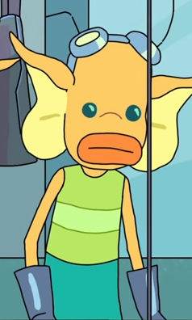
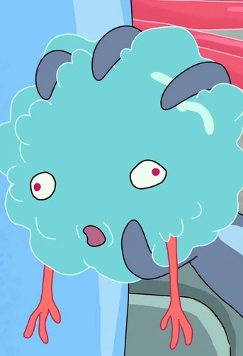
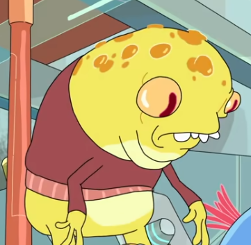

Career Choices
| One of our main career choices is to become a Blamf! Blamfs are our main worker in charge of most of the work that goes into making a Plumbus! Such as repurposing the schleem, taking the dingle bop and pushing it through the grumbo, using the fleeb, and more. Visit our How It's Made page for a visual representation on what work would be like! |  |
| Your job as a fleeb is to work together with the Blamfs. You will be rubbed against the dingle bop that has just been psuehd through the grumbo. As a fleeb your position in this process is very important as you contain all of the fleeb juice. |  |
| As a Schlami your main objective is to rub the back of the dingle bop and spit on it. Yes. That is literally it. |  |